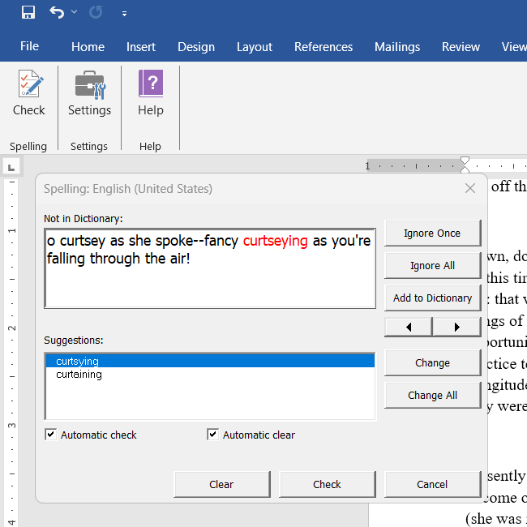
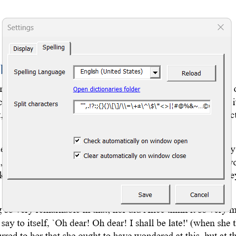
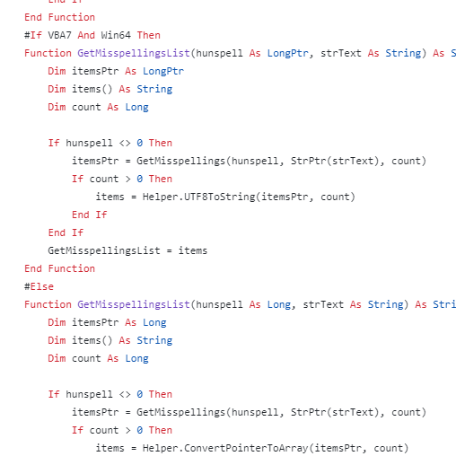
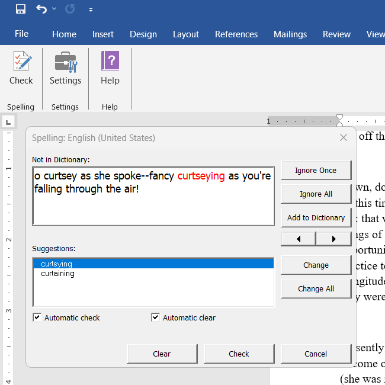
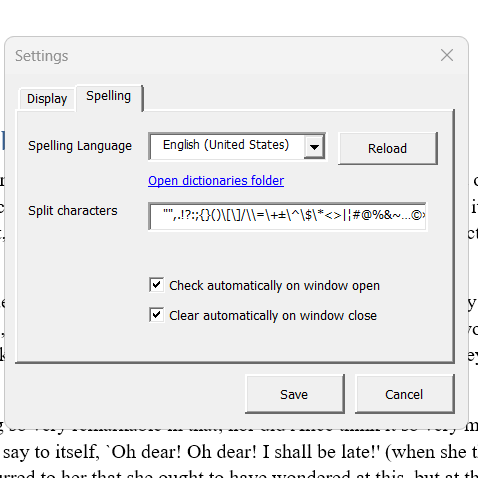
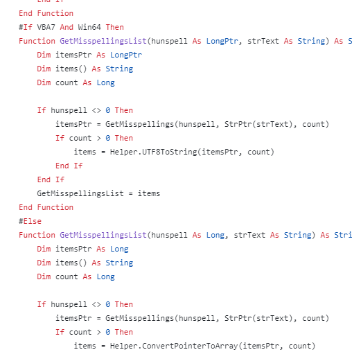

Easy access
The buttons are available on the ribbon menu.
Customization
It can be customized to your needs.
Fully open-source
Open-source available at Katip.
Katip is an add-in designed to enhance spellchecking capabilities in the Microsoft Word desktop application using the Hunspell library and dictionaries.
Many languages around the world lack built-in spellchecking functionality and are not supported by major software vendors. The goal of this add-in is to integrate Hunspell's robust spellchecking features into Microsoft Word, thereby enabling spellchecking for low-resource languages.
The buttons are available on the ribbon menu.
It can be customized to your needs.
Open-source available at Katip.
